What you need to know before the class
- The error formulas for digital and analog instruments and the max–min method — lecture 1 (open its Quick summary).
- How to use the multimeter and the oscilloscope — lab 1.
- Bring a calculator.
In class you get a two-page report form with four tasks. You fill it in on the spot, in pairs.
Instrument data
Without these numbers you cannot calculate any error. In class they are in the meter's manual and on the form.
The DT9208A digital multimeter

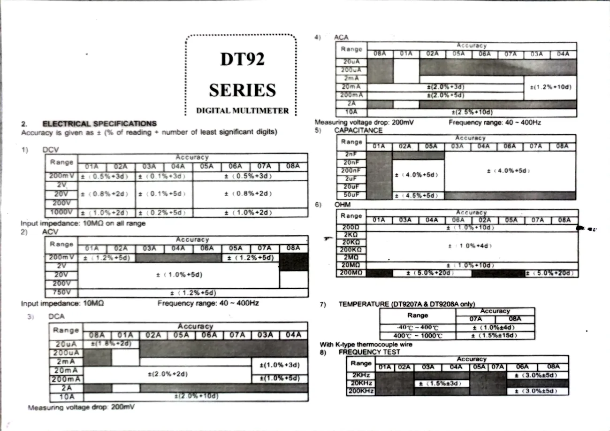
| Quantity | Range | Resolution (1 digit) | Accuracy |
|---|---|---|---|
| DC voltage | 200 mV | 0.1 mV | ±(0.5% + 3d) |
| 2 V | 0.001 V | ±(0.8% + 2d) | |
| 20 V | 0.01 V | ±(0.8% + 2d) | |
| 200 V | 0.1 V | ±(0.8% + 2d) | |
| 1000 V | 1 V | ±(1.0% + 2d) | |
| Resistance | 200 Ω | 0.1 Ω | ±(1.0% + 10d) |
| 2 kΩ | 0.001 kΩ | ±(1.0% + 4d) | |
| 20 kΩ | 0.01 kΩ | ±(1.0% + 4d) | |
| 200 kΩ | 0.1 kΩ | ±(1.0% + 4d) | |
| 2 MΩ | 0.001 MΩ | ±(1.0% + 4d) |
✚ I added the "resolution" column myself: the meter has a 3½-digit display (maximum reading 1999), so the last digit on the 2 V range is 0.001 V, on the 20 V range 0.01 V, and so on. Always check on your own meter where the decimal point is.
Analog instruments
| Instrument | Class | Range | Reading error |
|---|---|---|---|
| Oscilloscope | 2 | sensitivity × 8 divisions | not more than 0.1 division |
| Ammeter in the power supply | 2.5 | 2 A | in the class example: 0.025 A |
Task 1.1 — DC voltage, digital meter
Step by step
- The meter's black lead into COM, the red one into VΩ.
- Dial to DC voltage (V⎓), to begin with the 20 V range.
- Set the first voltage on the power supply (in class: 5 V, then 15 V).
- Touch the probes to the supply terminals: red to (+), black to (−).
- If the result would fit on a lower range — switch down (e.g. measure 1.1 V on the 2 V range). If "1" appears — go back up.
- Write down the voltage and the range, then compute the absolute and relative error.

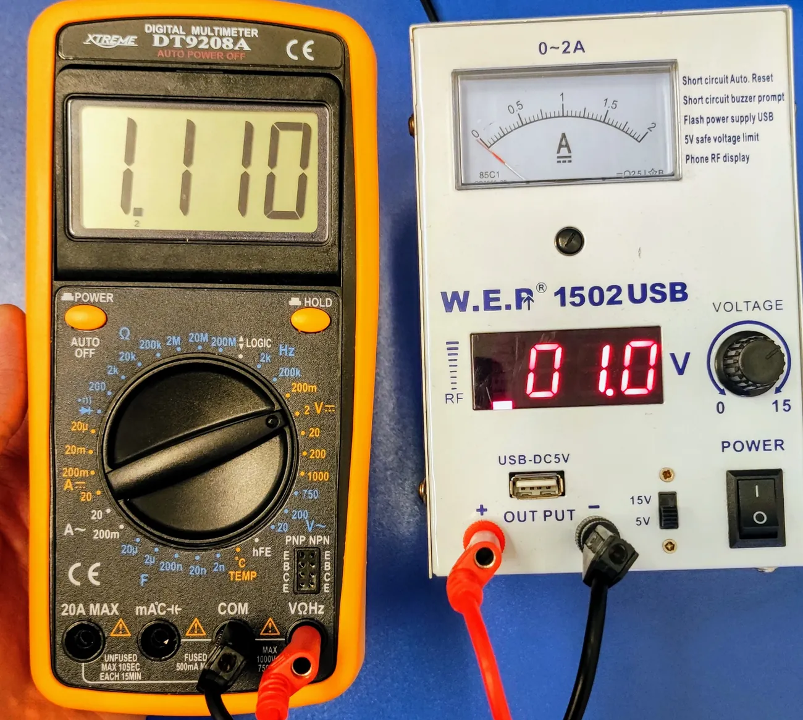

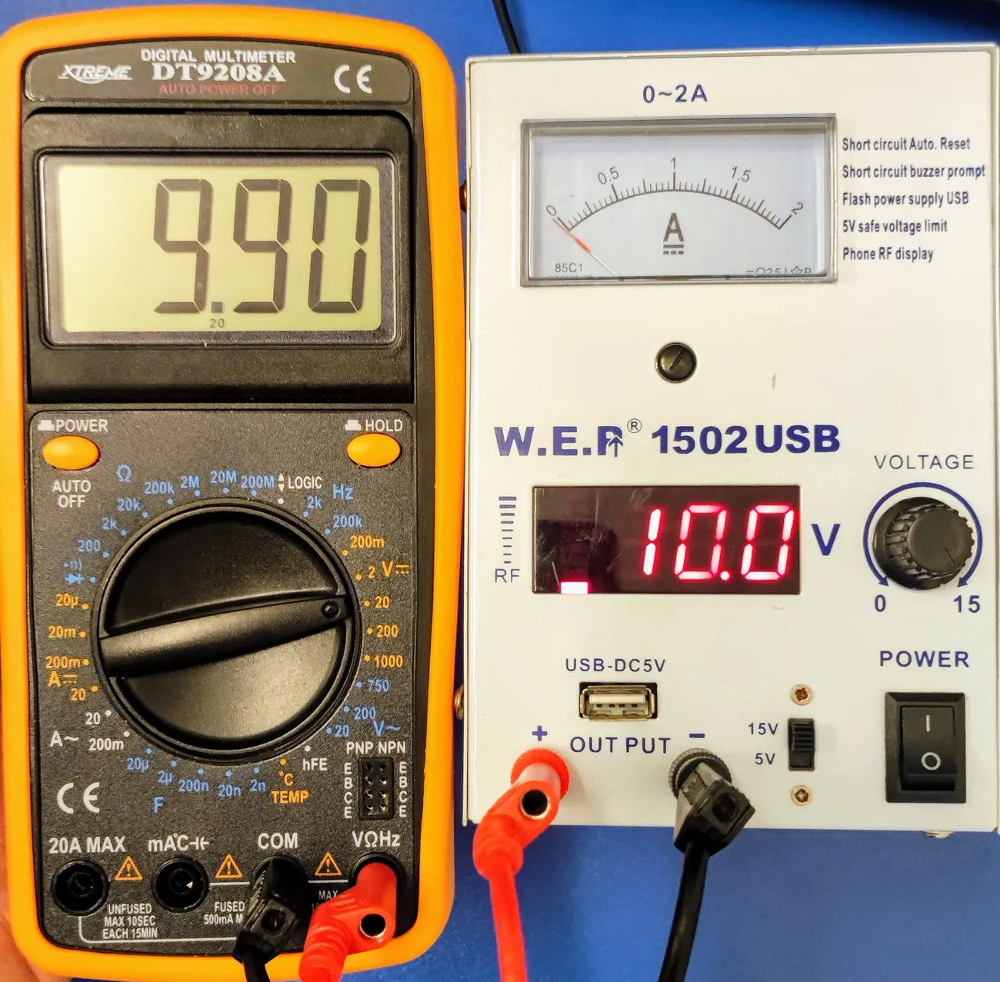
Example — the values from the photos above
1.110 V on the 2 V range (resolution 0.001 V, accuracy 0.8% + 2d):
ΔU = 0.8% · 1.110 + 2 · 0.001 = 0.0089 + 0.002 = 0.0109 ≈ 0.011 V
δ = 0.01091.110 · 100% = 0.98% → U = 1.110 ± 0.011 V
9.90 V on the 20 V range (resolution 0.01 V):
ΔU = 0.8% · 9.90 + 2 · 0.01 = 0.079 + 0.02 = 0.099 ≈ 0.10 V
δ = 0.0999.90 · 100% = 1.0% → U = 9.90 ± 0.10 V
How to round (from lecture 1)
Round the error to as many decimal places as the measured result has — the digits beyond that are just "chaos". Round, do not truncate.
Task 1.2 — DC voltage, oscilloscope
Here the oscilloscope is treated like a needle voltmeter: a DC voltage moves the horizontal line up.
Step by step
- Connect the cable from CH1 of the oscilloscope to the power supply (ground to "−").
- Input switch to GND — use POSITION to put the line on the bottom (or centre) graticule line. This is 0 V.
- Switch to DC. The line jumps up.
- Choose VOLTS/DIV so that the line is as high as possible but still on the screen.
- Count by how many divisions the line rose (to 0.1 of a division).
- Write down the number of divisions and the sensitivity, then compute the voltage, the range and the errors.

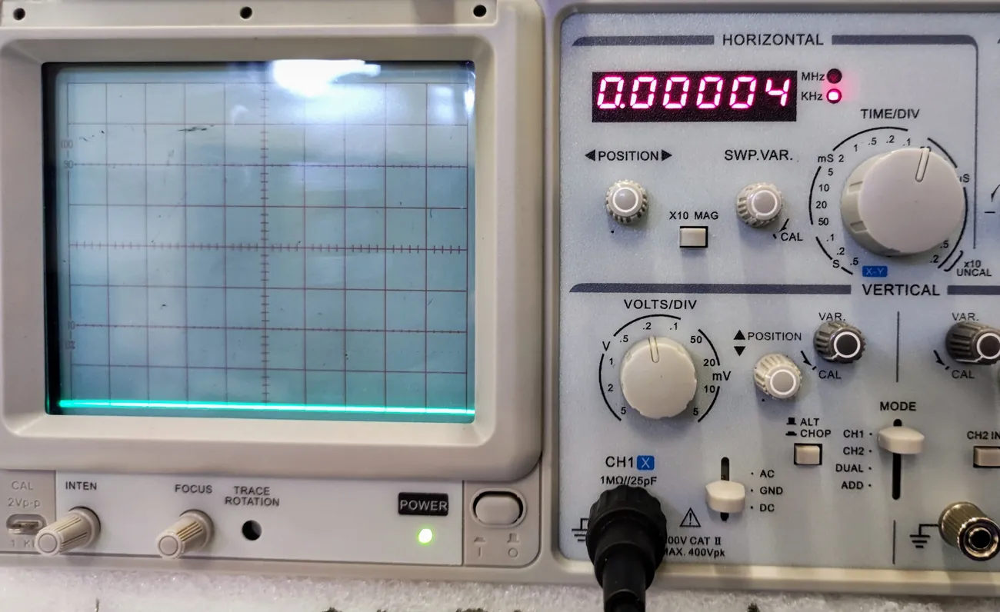

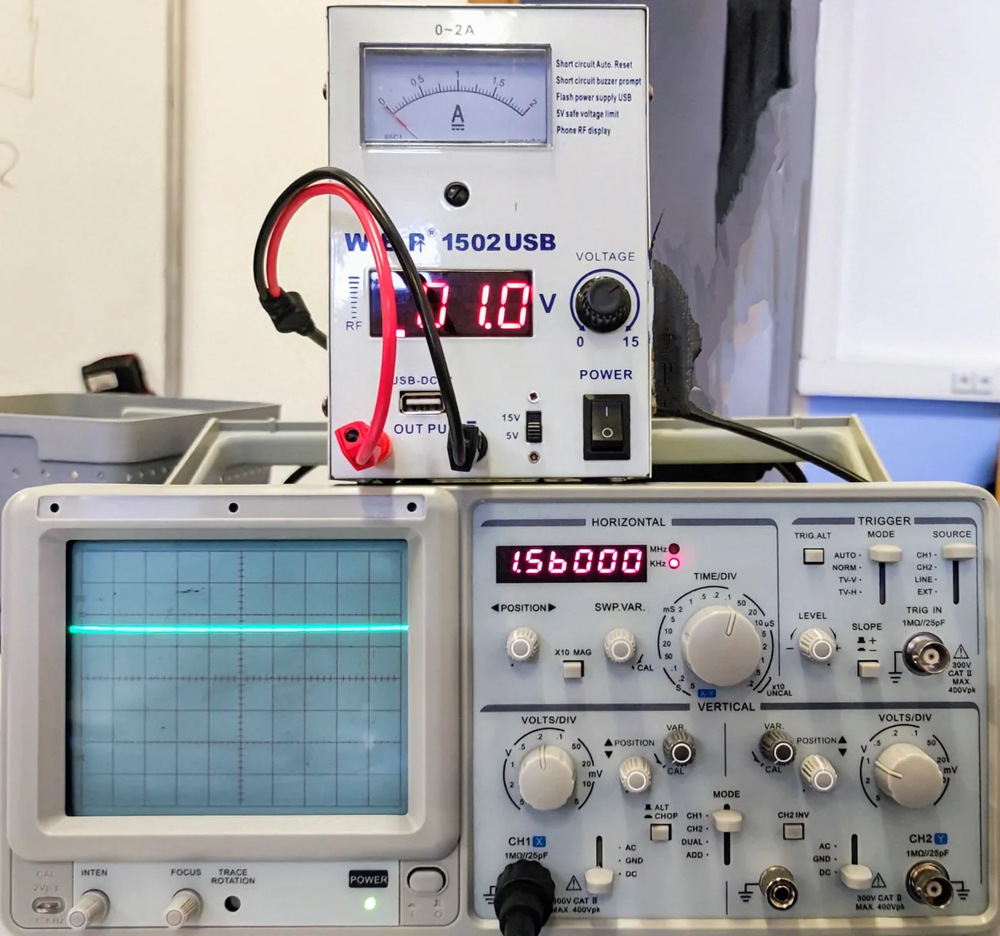

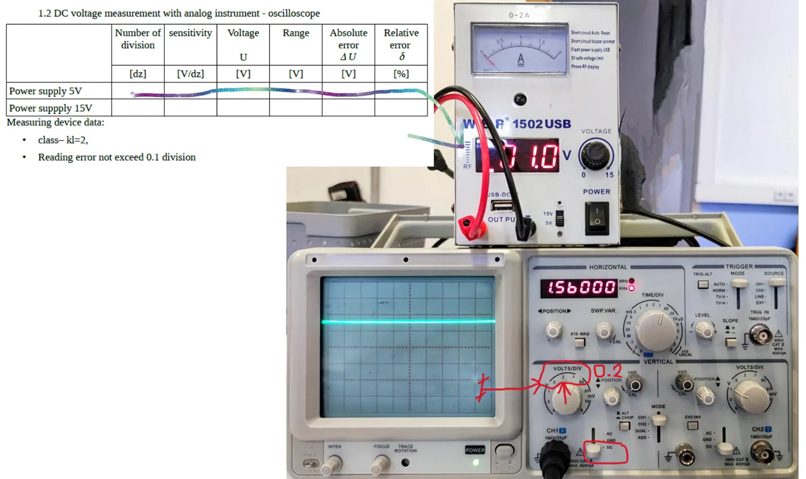
Formulas for the oscilloscope:
Example from the lab materials
Sensitivity 0.5 V/div → range 0.5 · 8 = 4 V. Base error: 2 · 4100 = 0.08 V. Reading error: 0.1 · 0.5 = 0.05 V. Total error: 0.08 + 0.05 = 0.13 V.
Task 2 — resistance
Step by step
- Take the resistor out of the circuit (it is measured "loose").
- Red lead in VΩ, dial on Ω.
- Touch the probes to the resistor's leads (direction does not matter).
- Choose the smallest range on which "1" does not appear.
- Write down the value and the range; compute ΔR and δ. Repeat for R1–R4.

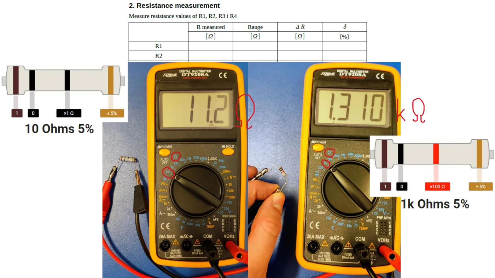
Example — the values from the slide
11.2 Ω on the 200 Ω range (resolution 0.1 Ω, accuracy 1% + 10d):
ΔR = 1% · 11.2 + 10 · 0.1 = 0.112 + 1.0 ≈ 1.1 Ω, δ = 9.9%
1.310 kΩ on the 2 kΩ range (resolution 0.001 kΩ, accuracy 1% + 4d):
ΔR = 1% · 1.310 + 4 · 0.001 = 0.0131 + 0.004 ≈ 0.017 kΩ, δ = 1.3%
You can see that on the 200 Ω range the "10 digits" term (a whole 1 Ω) spoils the accuracy for small resistances.
The resistor colour code
The slide shows the resistors' colour bands. The first two bands are digits, the third is the multiplier (number of zeros), the last is the tolerance (gold = 5%).
black 0 · brown 1 · red 2 · orange 3 · yellow 4 · green 5 · blue 6 · violet 7 · grey 8 · white 9
Brown–black–black = 10 Ω; brown–black–red = 10 and two zeros = 1 kΩ. The measured value may differ from the nominal one by the tolerance — that is normal.
Task 3.1 — DC current, direct method (analog instrument)
A 4 Ω power resistor is connected to the supply. You read the current from the supply's needle indicator.
Step by step
- Connect the 4 Ω resistor to the supply terminals.
- Set the voltage to 2 V.
- Read the needle position on the 0–2 A scale (look straight on, not from the side).
- Compute the error: class 2.5, range 2 A, plus the reading error.

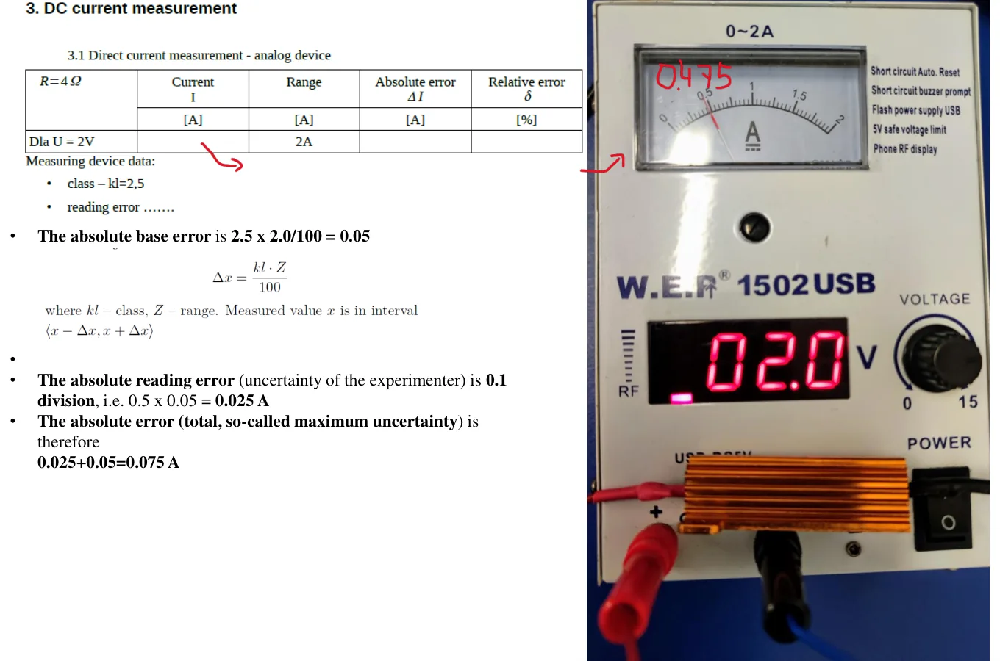
Example from the lab materials
Base error: 2.5 · 2.0100 = 0.05 A. Reading error: 0.025 A. Total: ΔI = 0.075 A.
For a reading of 0.475 A: δ = 0.0750.475 · 100% ≈ 16%. The error is large because the needle is at the beginning of the scale — from Ohm's law we expect 2 V / 4 Ω = 0.5 A, a quarter of the range.
Task 3.2 — DC current, indirect method (digital instrument)
The same current, but calculated from Ohm's law: you measure U and R with the digital meter and find the error with the max–min method.
Step by step
- With the resistor connected, measure the voltage at the supply terminals. Write down U and the range, compute ΔU.
- Disconnect the resistor from the supply and measure its resistance. Write down R and the range, compute ΔR.
- Compute Imin, Imax, and from them I and ΔI.

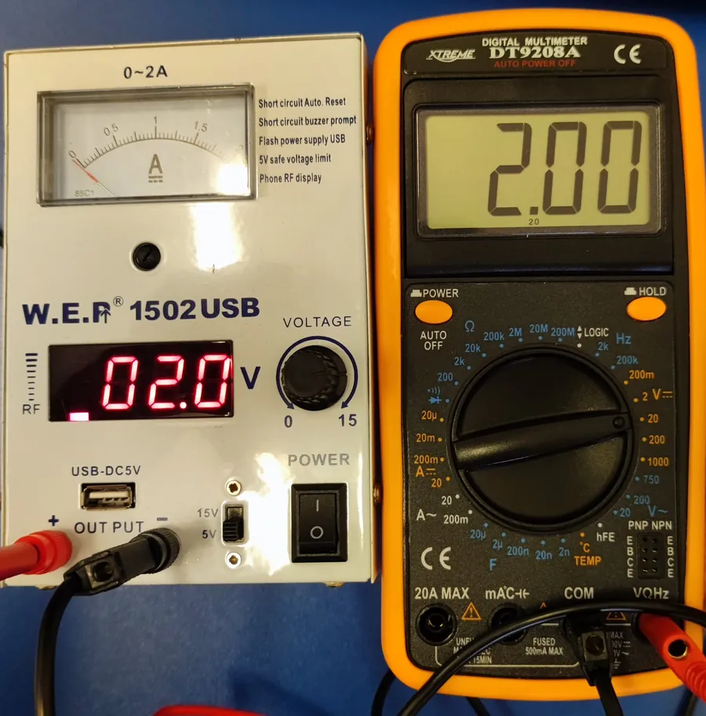

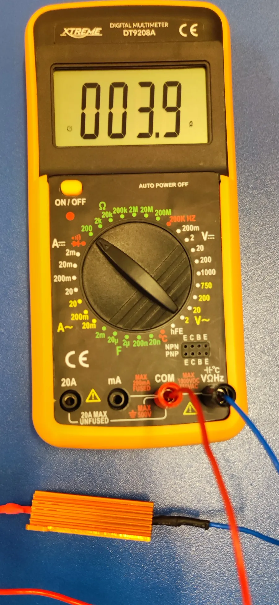
Example — the values from the photos
U = 2.00 V (20 V range): ΔU = 0.8% · 2.00 + 2 · 0.01 = 0.036 V
R = 3.9 Ω (200 Ω range): ΔR = 1% · 3.9 + 10 · 0.1 = 1.04 ≈ 1.0 Ω
Imin = 2.00 − 0.0363.9 + 1.0 = 0.401 A, Imax = 2.00 + 0.0363.9 − 1.0 = 0.702 A
I = 0.401 + 0.7022 = 0.55 A, ΔI = 0.702 − 0.4012 = 0.15 A
✚ Conclusion: the indirect method came out worse than the direct one, because 3.9 Ω measured on the 200 Ω range has an error of a whole 1 Ω. That is a good sentence for the report.
Task 4 — parameters of an alternating signal
You feed a sine from the generator and measure the period and the peak-to-peak voltage with the oscilloscope — for 1 kHz and for 1 MHz.
Step by step
- Connect the generator's OUT to the oscilloscope's CH1 with a BNC cable.
- On the generator set a sine and 1 kHz.
- Oscilloscope: switch to GND — centre the line; then to AC or DC.
- Choose VOLTS/DIV (the waveform should fill most of the screen) and TIME/DIV (1–3 periods on the screen). Adjust LEVEL so the picture stands still.
- Count the divisions vertically from trough to peak → the peak-to-peak voltage.
- Count the divisions horizontally for one full period → the period T, then f = 1/T.
- Repeat for 1 MHz (TIME/DIV must be reduced a thousand times — to fractions of a microsecond).

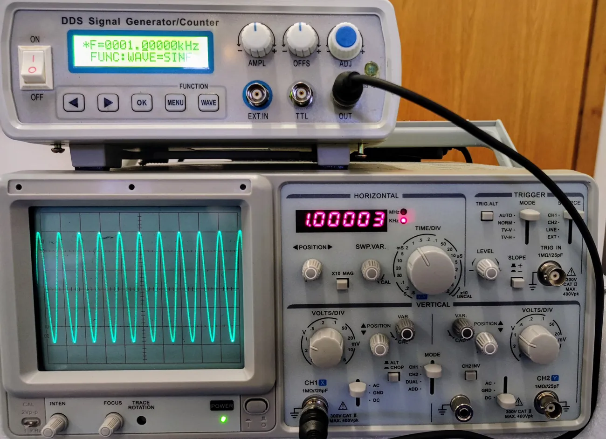

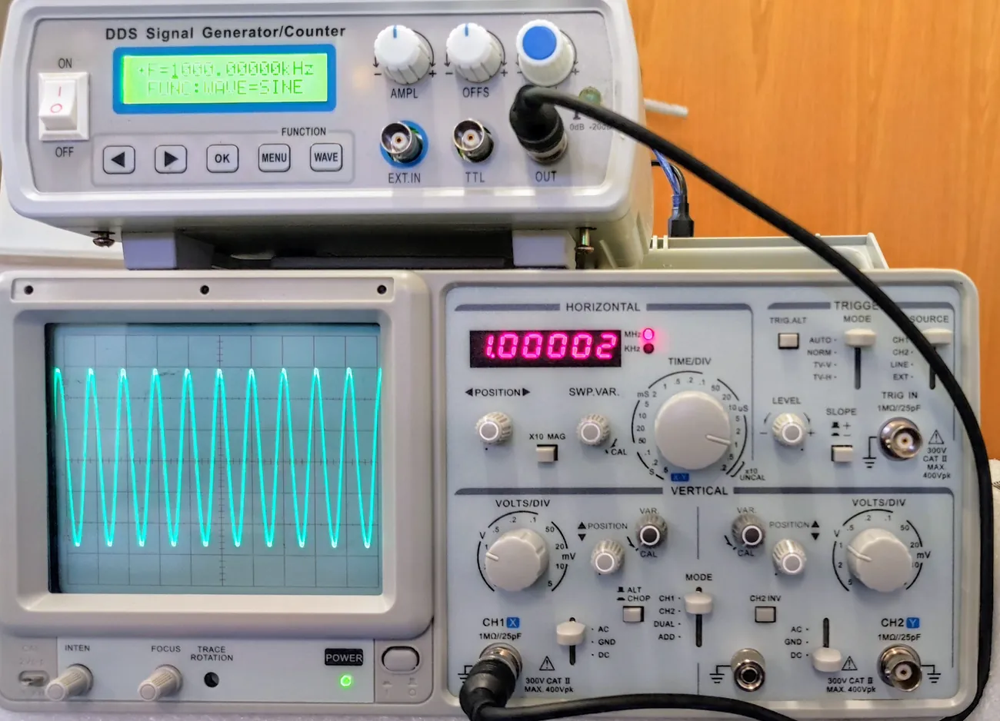
Tip from the site author
Measure the period between two identical points, e.g. from peak to peak or between two "upward" zero crossings. Use POSITION to move a peak onto a vertical graticule line — counting gets easier. The calculated frequency should come out close to the generator's; if it is off by an order of magnitude, you mixed up the unit (ms / µs).
Practice tasks
The data is different from the class — the point is to practise the method.
1. Digital voltmeter
A DT9208A showed 3.28 V and 12.06 V (both on the 20 V range) and 1.571 V (on the 2 V range). Compute the absolute and relative error of each measurement.
Show solution
- 3.28 V: ΔU = 0.008 · 3.28 + 2 · 0.01 = 0.0262 + 0.02 = 0.046 ≈ 0.05 V; δ = 0.046/3.28 = 1.4% → 3.28 ± 0.05 V
- 12.06 V: ΔU = 0.008 · 12.06 + 0.02 = 0.116 ≈ 0.12 V; δ = 0.97% → 12.06 ± 0.12 V
- 1.571 V: ΔU = 0.008 · 1.571 + 2 · 0.001 = 0.0146 ≈ 0.015 V; δ = 0.93% → 1.571 ± 0.015 V
The closer to the end of the range, the smaller the relative error.
2. The oscilloscope as a voltmeter
You measure 3.3 V with the oscilloscope (class 2, 8 divisions, reading error 0.1 division). Compute the error for a sensitivity of 0.5 V/div and of 1 V/div. Which one should you choose?
Show solution
- 0.5 V/div: line at 6.6 divisions; range 4 V; ΔU = 2 · 4100 + 0.1 · 0.5 = 0.08 + 0.05 = 0.13 V; δ = 3.9%
- 1 V/div: line at 3.3 divisions; range 8 V; ΔU = 2 · 8100 + 0.1 · 1 = 0.16 + 0.1 = 0.26 V; δ = 7.9%
Choose 0.5 V/div — the smallest sensitivity at which the line still fits on the screen. The error is half as large.
3. Ohmmeter
The meter showed: 46.8 Ω (200 Ω range), 0.993 kΩ (2 kΩ range), 2.17 kΩ (20 kΩ range), 47.3 kΩ (200 kΩ range). Compute ΔR and δ. Why was 2.17 kΩ not measured on the 2 kΩ range?
Show solution
- 46.8 Ω: ΔR = 0.468 + 10 · 0.1 = 1.47 ≈ 1.5 Ω; δ = 3.1%
- 0.993 kΩ: ΔR = 0.00993 + 4 · 0.001 = 0.014 kΩ; δ = 1.4%
- 2.17 kΩ: ΔR = 0.0217 + 4 · 0.01 = 0.062 ≈ 0.06 kΩ; δ = 2.8%
- 47.3 kΩ: ΔR = 0.473 + 4 · 0.1 = 0.87 ≈ 0.9 kΩ; δ = 1.8%
2.17 kΩ is larger than 1.999 kΩ — on the 2 kΩ range the meter would show "1" (over-range).
4. Needle ammeter
A class 2.5 ammeter with a 2 A range shows 0.70 A. Take the reading error as 0.025 A. Compute ΔI and δ. What would the relative error be for a reading of 1.8 A?
Show solution
ΔI = 2.5 · 2100 + 0.025 = 0.075 A — the same for any reading.
- 0.70 A: δ = 0.075/0.70 = 10.7%
- 1.8 A: δ = 0.075/1.8 = 4.2%
5. Current by the indirect method
Measured: U = 3.02 V (20 V range) and R = 8.2 Ω (200 Ω range). Find the current and its error with the max–min method.
Show solution
ΔU = 0.008 · 3.02 + 0.02 = 0.044 ≈ 0.04 V; ΔR = 0.082 + 1.0 = 1.08 ≈ 1.1 Ω
Imin = 3.02 − 0.048.2 + 1.1 = 2.989.3 = 0.320 A; Imax = 3.02 + 0.048.2 − 1.1 = 3.067.1 = 0.431 A
I = 0.320 + 0.4312 = 0.376 A; ΔI = 0.431 − 0.3202 = 0.055 A
I = 0.376 ± 0.055 A (about 15%)
6. An alternating signal
On the screen a sine spans 5.6 divisions from trough to peak at 0.5 V/div, and one period takes 8 divisions at 50 µs/div. Give Upp, T and f. Which time base should you set for a 1 MHz signal so that one period takes 5 divisions?
Show solution
Upp = 5.6 · 0.5 = 2.8 V; T = 8 · 50 µs = 400 µs = 0.4 ms; f = 10.0004 = 2500 Hz = 2.5 kHz
For 1 MHz: T = 1 µs; 5 divisions → 1 µs5 = 0.2 µs/div.
What costs points most often
- The wrong range (measuring 1.1 V on the 20 V range instead of 2 V).
- Mixing up the resolution: on the 20 V range one digit is 0.01 V, not 0.001 V.
- No units in the table and unrounded errors (0.010888 V).
- Measuring the resistance of a resistor still connected to the supply.
- The oscilloscope's VAR knob out of the CAL position — then every reading is wrong.